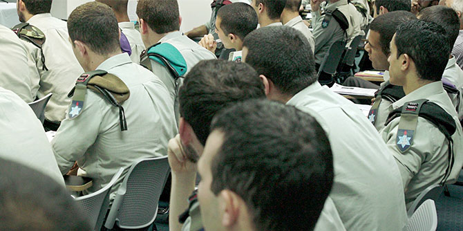

The partnership between the Mandel Leadership Institute and the Israel Defense Forces expanded at the start of the 2016-2017 academic year, with the launch of the new Mandel Program for the IDF Tactical Command College. The fellows in this program, around 60 in number, are all infantry commanders currently studying at the IDF Tactical Command College as preparation for service as company commanders. The two-year program is directed by Dr. Chava Shane, who also directs the Institute’s long-standing Mandel IDF Educational Leadership Program.
The new program for IDF commanders was launched on October 10, 2016. At the opening ceremony, Moshe Vigdor, director general of the Mandel Foundation–Israel, described the Mandel Foundation’s main areas of activity. He was followed by the head of the IDF Tactical Command College, Colonel Oren Cohen, who spoke warmly of the IDF’s collaboration with the Mandel Leadership Institute, and emphasized the importance of “personality development” in education.
The opening day, which took place just before Yom Kippur, also included a lecture by Prof. Avigdor Shinan of the Hebrew University of Jerusalem on “Leader-Educators between Rosh Hashanah and Yom Kippur.” The lecture explored the character of the leader as reflected in traditional rabbinical texts.
In early November, during the second session of the new program for the IDF Tactical Command College, the fellows met with Mr. Morton Mandel, chairman of the Mandel Foundation, who shared his insights about education and leadership.
The beginning of November also saw the launch of Cohort 11 of the Mandel IDF Educational Leadership Program, which has been underway since 2005. Founded in partnership with the IDF Education and Youth Corps, this program aims to help IDF officers develop their professional and personal identities as educators in uniform. Its fellows are officers from a wide range of roles and military branches: education officers, HR officers, intelligence and communications officers, and commanders from the air force, navy, and ground command. This one-year program covers topics such as the aims of education, educational challenges in the IDF and Israeli society, values-based education, and models of educational leadership.

{kind=link}